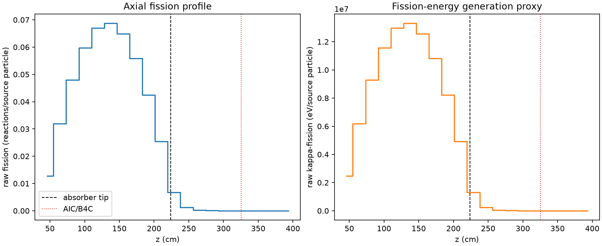
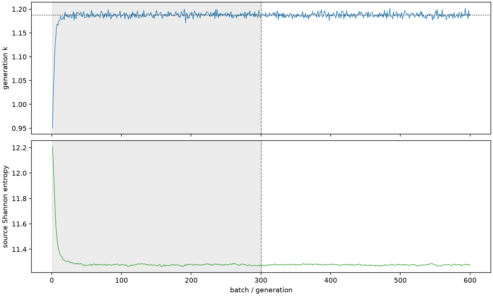

| field | value |
|---|---|
| experiment | V2-ADAPTIVE_01-0029 |
| k | 1.1876057274684235 |
| MC standard error | 0.00017084227617520392 |
| seconds | 1289.777641392022 |
| acceptance | not_assessed |
| convergence | review_required |
Completed is output integrity only; physical and statistical review required. Zero tallies do not prove zero production or zero uncertainty.
| diagnostic | value |
|---|---|
| geometric fuel voxels | 5280 |
| zero fission tally voxels | 667 |
| low signal fuel voxels | 1659 |
| low signal fission share | 7.428965282579618e-05 |
| low signal kappa share | 7.43257059044046e-05 |
| important fission share | 0.9501255581562494 |
| previous filter included | 3621 |
| duration estimate s | 1562.5173488400023 |
| actual minus estimate s | -272.73970744798044 |
| fission relative MC error | statistics |
|---|---|
| all_geometric_fuel | {"voxels": 5280, "positive_mean_voxels": 4613, "zero_mean_voxels": 667, "undefined_relative_error_voxels": 667, "median": 0.009884529302538907, "p95": 0.8843810338746514, "maximum": 1.0000000000000002} |
| low_signal | {"voxels": 1659, "positive_mean_voxels": 992, "zero_mean_voxels": 667, "undefined_relative_error_voxels": 667, "median": 0.5499124182145056, "p95": 1.0, "maximum": 1.0000000000000002} |
| important_95pct | {"voxels": 2343, "positive_mean_voxels": 2343, "zero_mean_voxels": 0, "undefined_relative_error_voxels": 0, "median": 0.006548680148241738, "p95": 0.009426510809240764, "maximum": 0.011275058830534705} |
| outside_previous_filter | {"voxels": 1659, "positive_mean_voxels": 992, "zero_mean_voxels": 667, "undefined_relative_error_voxels": 667, "median": 0.5499124182145056, "p95": 1.0, "maximum": 1.0000000000000002} |
| kappa_fission relative MC error | statistics |
|---|---|
| all_geometric_fuel | {"voxels": 5280, "positive_mean_voxels": 4613, "zero_mean_voxels": 667, "undefined_relative_error_voxels": 667, "median": 0.009873794150416317, "p95": 0.8849054360540385, "maximum": 1.0000000000000002} |
| low_signal | {"voxels": 1659, "positive_mean_voxels": 992, "zero_mean_voxels": 667, "undefined_relative_error_voxels": 667, "median": 0.549455334676229, "p95": 1.0, "maximum": 1.0000000000000002} |
| important_95pct | {"voxels": 2343, "positive_mean_voxels": 2343, "zero_mean_voxels": 0, "undefined_relative_error_voxels": 0, "median": 0.006541098637693732, "p95": 0.009417046130853835, "maximum": 0.01126179692928686} |
| outside_previous_filter | {"voxels": 1659, "positive_mean_voxels": 992, "zero_mean_voxels": 667, "undefined_relative_error_voxels": 667, "median": 0.549455334676229, "p95": 1.0, "maximum": 1.0000000000000002} |
| axial bin | fission share | kappa-fission share |
|---|---|---|
| 1 | 0.026399559026835176 | 0.026400744258456826 |
| 2 | 0.06579281301525887 | 0.06579256526476461 |
| 3 | 0.09885348229003893 | 0.0988526884513394 |
| 4 | 0.12324729729596766 | 0.1232466813908402 |
| 5 | 0.13806307136870277 | 0.1380620897091924 |
| 6 | 0.14167767421503866 | 0.14167680126878882 |
| 7 | 0.13373388348177723 | 0.13373302020336256 |
| 8 | 0.11518592068218877 | 0.11518507277808733 |
| 9 | 0.08741878343261385 | 0.08741828726885453 |
| 10 | 0.05237241091382238 | 0.05237213358775319 |
| 11 | 0.01400202869675982 | 0.014005328957931105 |
| 12 | 0.0025555569285270327 | 0.002556711740736921 |
| 13 | 0.0005385789583047689 | 0.000538854362221648 |
| 14 | 0.00011648296221797662 | 0.00011654706130200601 |
| 15 | 3.1598858372007944e-05 | 3.161081722119018e-05 |
| 16 | 8.905899058359341e-06 | 8.909996142507176e-06 |
| 17 | 1.4658956872286455e-06 | 1.467068094805026e-06 |
| 18 | 4.479650904276837e-07 | 4.4774770492055637e-07 |
| 19 | 3.811373807984886e-08 | 3.806720499156097e-08 |
| 20 | 0.0 | 0.0 |
Histories include the inactive-to-active transition at batch 300. kappa-fission approximates fission energy production, not total heat deposition.

